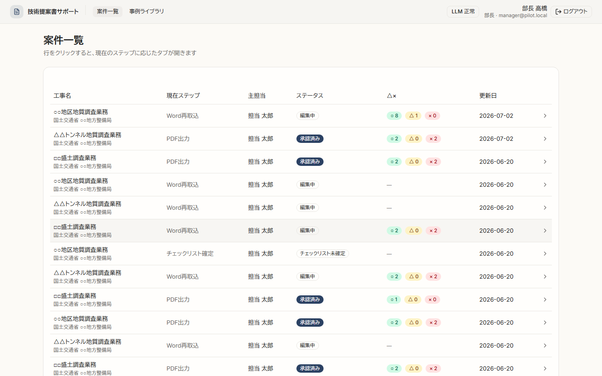
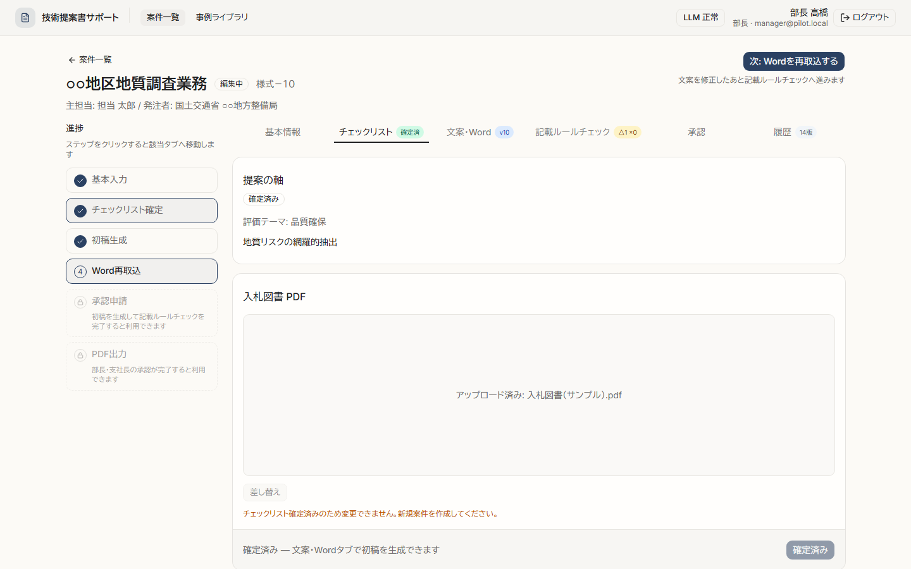
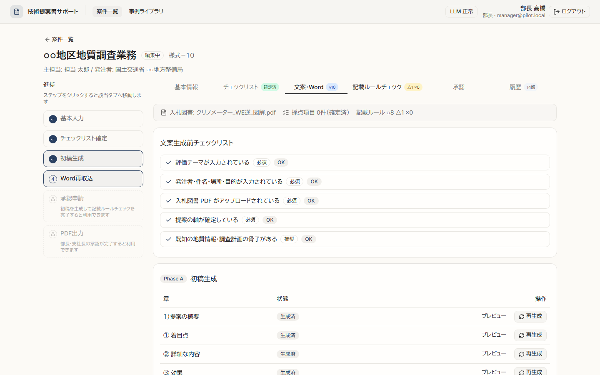
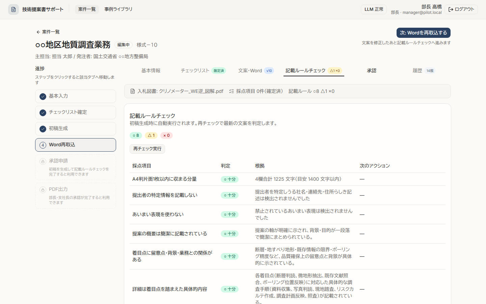

技術提案書サポート
入札の技術提案書（様式－１０）を、画面操作で作成・承認・提出まで進める Web アプリ
新入社員向けの読み方 —
このページでは「何ができるツールか」「どんなデータを残せるか」「どこに・なぜ保存するか」を順に説明します。
技術用語は最小限にし、DB＝表に書けるデータ、
Storage＝ファイル置き場、
GitHub＝プログラムの設計図、と覚えてください。
公開デモ稼働中
担当者・部長・支社長の3ロール
2026-07
このツールは何をする？
地質調査などの入札で、技術提案書をチームで仕上げるための「作業台」です。
- 担当技術者 — 案件を登録し、入札図書を確認、AI で文案の下書きを作り、承認を申請する
- 部長・支社長 — 内容を確認して承認（または差し戻し）する
- AI（Claude） — 4欄の文案下書きと記載ルールチェックを補助。最終責任は人間
新規案件→
入札図書・軸確定→
AI 初稿→
記載ルール→
承認→
提出 PDF
どんなデータを保持できる？
ブラウザを閉じても残るものと、ファイルとして残るものがあります。1案件＝1行の表＋関連ファイル、と考えると分かりやすいです。
📋 案件の基本情報
- 工事名・発注者・場所・工期
- 調査目的・既知の地質情報・計画の骨子
- 評価テーマ・提案の軸（仮／確定）
- 主担当・現在のステータス（編集中・承認待ち等）
✅ 作業の進行・判定
- チェックリスト確定したか（入札図書・軸の確定）
- 文案4欄の生成済みフラグ（概要・着目点・詳細・効果）
- 記載ルールチェック結果（○△× と理由）
- 承認申請の理由・差戻し理由
📎 ファイル
- 入札図書 PDF（アップロード）
- 生成した Word（様式－１０）
- 提出版 PDF（承認後に出力）
📝 履歴・誰が何をしたか
- 版履歴（v1 初稿、v2 チェック後…）
- 操作ログ（作成・軸確定・承認申請・承認 等）
- 部長・支社長の承認日時・コメント
- ログインユーザーの名前・役割（担当／部長／支社長）
※ AI が生成した文案の本文も DB に保存されます。再ログインや別 PC から同じ案件を開いても続きから作業できます。
どこに・なぜ保存する？
保存場所は3つだけ。中身の種類で分けています（全部1か所に入れないのは、探しやすさ・安全性・役割分担のためです）。
① Supabase（DB）
例えると → 業務台帳・Excel の表
何を入れる？
- 案件名・発注者・進捗
- 提案の軸・記載ルール結果
- 承認・差戻しの記録
- 版履歴・操作ログ
- 表形式のデータ向き
- 検索・一覧・権限制御がしやすい
② Storage（ファイル）
例えると → 共有ドライブ・書類棚
何を入れる？
- 入札図書 PDF
- 生成 Word
- 提出 PDF
- PDF/Word はファイルのまま保管
- ダウンロード・再取得が簡単
③ GitHub（コード）
例えると → アプリの設計図・レシピ
何を入れる？
- 画面の見た目・ボタンの動き
- 記載ルール9項目の定義
- API の処理ロジック
- 開発者がバージョン管理
- Vercel がここから Web 公開
画面で操作すると、こう保存される
1
新規案件を登録 → DB の proposal_cases に1行追加（工事名・発注者など）
2
入札図書 PDF をアップロード → ファイル本体は Storage、ファイル名と場所の情報は DB
3
提案の軸を確定・チェックリスト確定 → DB の該当列を更新（あとから変更しにくくするため「確定」フラグあり）
4
AI で初稿生成 → 文案テキストは DB、Word は Storage、操作は 操作ログ に記録
5
記載ルールチェック → 判定結果（○△×）を DB に保存。ルールの定義そのものは GitHub のコード側
6
承認・PDF 出力 → 承認者・日時は DB、提出 PDF は Storage
| 観点 | DB | Storage | GitHub |
|---|---|---|---|
| 入れるもの | 文字・数字・状態 （表に書けるもの） |
PDF・Word （ファイル本体） |
プログラム （画面・ルール定義） |
| 誰が変える？ | 担当者が画面操作 （承認者は承認のみ） |
アップロード・生成時 に自動で増える |
開発者がコード修正 （日常業務では触らない） |
| 閉じても残る？ | はい（クラウド DB） | はい（クラウド Storage） | はい（ただし案件データではない） |
画面のイメージ
左に進捗、右に作業タブ。行やタブをクリックするだけで次の作業へ進めます。





設計で意識したこと
- 1案件を順に進める作業向けに2ペイン UI
- 「確定して初稿生成へ」など次の作業へ1ボタン
- データは DB・ファイル・コードで役割分担
- 担当者は自分の案件だけ編集（権限制御）
- 操作ログで「誰がいつ何をしたか」を残す
今後の拡張予定
- 留意事項テキスト欄・過去実績欄
- Word を手元で直したあとの再取込
- 本番用 Supabase 環境の整備
- 関係者パイロットでのフィードバック反映
覚え方 —
DB＝案件の中身と履歴
Storage＝PDF・Word
GitHub＝アプリの作り方